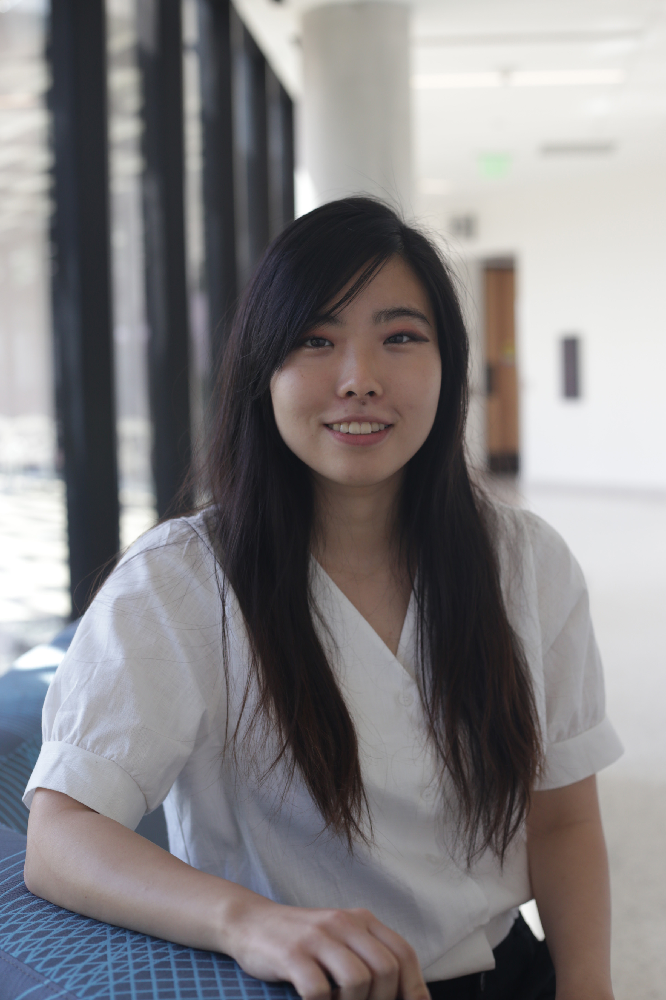
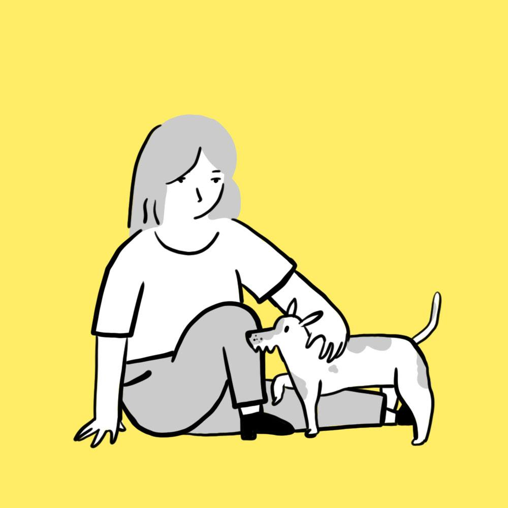
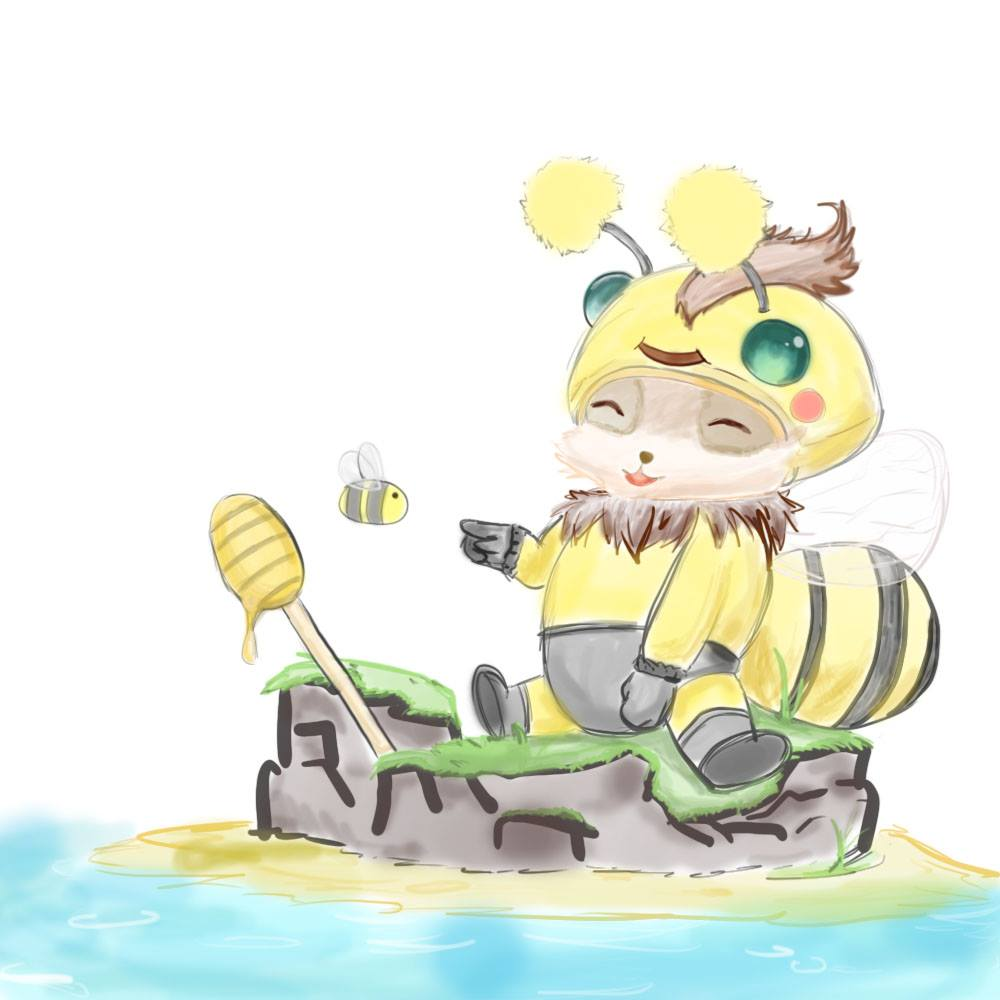
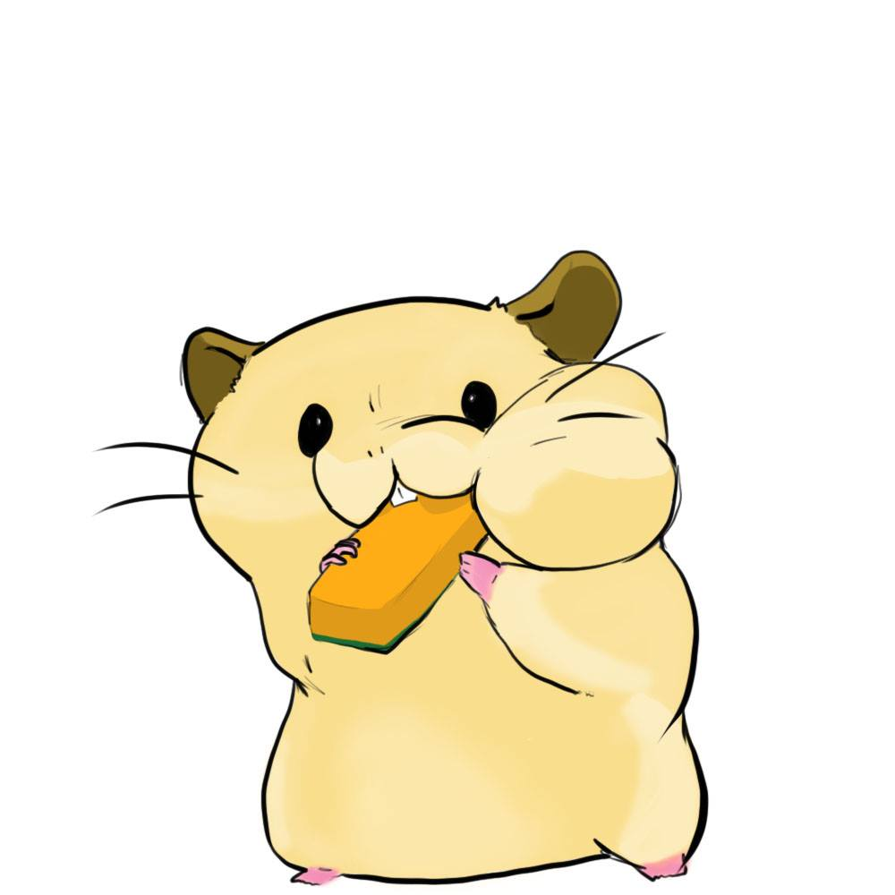

Hi, my name is
SooJin Park
I am a thinker, a designer, and a creator. I convert problems into design solutions that provide better user experience. From a game developer to UX/UI Designer, I am ready for a challenge.
Strong understanding of gaming, design, and coding programs such as Unity, Maya, Processing, and Adobe Programs.
- Major in Game Design and Development
- Minor with HCI/UX Design and Information Security
- UX/UI Certificate from McCombs Business School
I used to major in Microbiology until sophomore year of college. Studying cell and animal behaviors is my favorite hobby.
I really love hamsters. I've had them since I was a kid. My favorite breed is djungarian hamster because they're so friendly
and always curious. Ask me anything about hamsters!
Greyhound Rescue Austin Nonprofit Project
Complete redesign of GRA website for high fiedelity website and mobile.
The current GRA website hinders the mission of the organization. Users struggle to use the website for main activities (adopting, fostering, volunteering). The website projects a feeling of untrustworthiness about the organization due to outdated visuals and lack of professionalism.
Our team redesigned the GRA website by centering websites’ goals around users’ primary needs (adopting, fostering, volunteering) and displaying the legitimacy of the site.
My Sketches



Connect With Me
email: soojinpark18@gmail.com